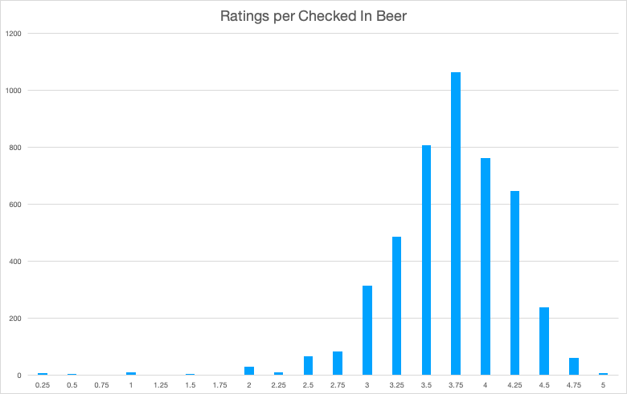

A handy tool with Untappd is being able to score the beers that you check in. You can score beers on a scale of 1 to 5 with every quarter score being available. When you have a beer it's good to know that if you go to a brewery or bar in the future that you can see how you rated it. Was it horrible, so-so, incredible? As the beer also has a check in date you can see how long it's been since you had that beer. If you weren't to big of a fan when you last had it then maybe it's time to try again due to changes in your preferences.
I use a score of 3 as a baseline. It simply means that the beer is fine to have but it doesn't do anything for me. The lowest scores will be given to those that are quite common like Bud Light, Corona, Miller Lite, etc. 3.5 generally means I ordered a beer that had a score of 3.75 and I knocked it down a quarter, or a beer that had a score of 3-3.25 and was better than expected. 3.75 means it's a nice beer to have and just on the cusp of being quite above average. Anything 4 or above means it is an absolutely delicious beer. Obtaining a perfect score is rare because I'm a tough grader. I need to be WOWed in order to get that perfect 5.
With that said, I like to spend my money on good quality beer in order to make it worth paying the premium to purchase. Whenever I order a beer I always aim to get a beer that has a global average score of at least 3.75. Because of that level most of the beers I score end up getting a 3.75-4.25.
